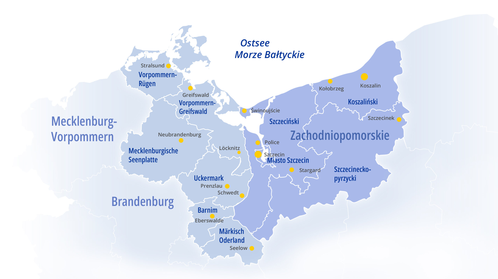

Nachbarsprache |wird| reanimiert. Erwerb sprachlicher und interkultureller
Kompetenzen durch AI-gestützte Reanimationstrainings im deutsch-polnischen
Grenzraum
Im deutsch-polnischen Grenzgebiet des Interreg VI A Programms setzen wir 2025-2028 das Projekt NaReT um.
StellenausschreibungWissenschaftliche*r Mitarbeiter*in - Institut für Mathematik und Informatik 25/Sa07Research Assistant - Institute of Mathematics and Computer Science 25/Sa07Asystenta badawczego - Instytucie Matematyki i Informatyki Uniwersytetu w Greifswaldzie 25/Sa07

Quelle: Programmgebiet des Interreg VI A
Projektpartner / Partnerzy projektu:
- Universitätsmedizin Greifswald
- Universität Greifswald
- Uniwersytecki Szpital Kliniczny nr 1 im. prof. Tadeusza Sokołowskiego PUM
w Szczecinie
Projektziel: Erwerb und Popularisierung der Nachbarsprache und interkultureller
Kompetenzen mittels AI-gestützter, motivierender, themenspezifischer
XR-Trainings und Programme auf mehreren Bildungsstufen in grenzüberschreitenden
Teams: Jugendliche, Erwachsene, Seniorengruppen und Rettungskräfte im
Fördergebiet.
Um das primäre Ziel des Erwerbs von Nachbarsprache und interkultureller
Kompetenzen zu erreichen, wird entsprechend der Aufteilung der Zuständigkeiten
der Projektpartner, das Thema der Lebensrettung als sinnstiftendes,
motivierendes und aufregendes Vehikel genutzt und das Erlernen der
Nachbarsprache mit einer tiefgreifenden, lebenswichtigen Erfahrung verbunden.
Diese bedeutungsgebundene nachbarsprachliche Bildung wird durch tandemartige,
AI-gestützte, hoch motivierende Trainings realisiert. Zum ersten Mal in dem
Fördergebiet wird darüber hinaus eine rezeptive zweisprachige Bildung angeboten:
Das Lernen und das Lehren wird durch XR-Technologie “rezeptiv anfassbar“. Dies
bedeutet, dass die Teilnehmenden in realistischen Szenarien die Nachbarsprache
anwenden müssen, um die anspruchsvollen Aufgaben der Reanimation zu bewältigen.
Die erforderlichen Kompetenzen in der Nachbarsprache werden sofort durch die
hohe Verantwortung, die mit der Rettung des menschlichen Lebens verbunden sind,
auf die Probe gestellt. Durch diesen Anspruch entsteht eine natürliche und
intrinsische Motivation. Das Sprachenlernen verwandelt sich somit von einem
routinemäßigen Lernprozess zu einem aufregenden Erlebnis.
Um die Realitätsnähe und Attraktivität der Kommunikationstrainingsszenarien zu
maximieren, setzen wir auf den Einsatz innovativer XR-Technologie. Diese
ermöglicht die mobile Simulation lebensechter Szenarien, die in die reale Welt
der Teilnehmenden eingebettet werden. Zur Veranschaulichung: Die Simulation mit
der entsprechenden Ausrüstung (die Trainingspuppe und Trainingsgeräte) findet im
Seminarraum der jeweiligen Zielgruppe statt. Die XR Brille auf dem Kopf der
teilnehmenden Person ermöglicht die Darstellung einer realistischen Umgebung
(z.B. einer Bahnhofsszene) und visualisiert die Trainingspuppe als ein
lebensechtes Opfer mit realistischen Verletzungen. Die simulierte Umgebung
reagiert, mittels künstlicher Intelligenz (AI), auf Deutsch bzw. Polnisch,
interaktiv und kommunikativ auf die Handlungen der Teilnehmenden. Andererseits
muss die Person aktiv Informationen in der Nachbarsprache, z.B. von den
simulierten Anwesenden, am Unfallort einholen. Um den Bildungsfortschritt auf
der Grundlage einer steigenden Lernmotivation zu gewährleisten geschieht die
Sprachbildung in diesen realistisch simulierten Szenarien in ansteigendem
Schwierigkeitsgrad, mit progressivem Anspruch und mit wachsender Verantwortung
(gamification).
Cel projektu: Nabycie i popularyzacja sąsiedniego języka i umiejętności
międzykulturowych za pomocą wspieranych przez AI, motywujących, tematycznych
treningów XR i programów na wielu poziomach edukacyjnych w zespołach
transgranicznych: młodzież, dorośli, grupy seniorów i ratownicy w obszarze
wsparcia.
Ta znacząca sąsiednia edukacja językowa jest realizowana poprzez tandemowe,
wspierane przez sztuczną inteligencję, wysoce motywujące treningi. Po raz
pierwszy w obszarze wsparcia oferowana jest również dwujęzyczna edukacja
receptywna: Uczenie się i nauczanie staną się "receptywnie namacalne" dzięki
technologii XR. Oznacza to, że uczestniczący muszą używać sąsiedniego języka w
realistycznych scenariuszach, aby opanować trudne zadania związane z reanimacją.
Wymagane umiejętności w sąsiednim języku są natychmiast wystawiane na próbę
przez wysoki poziom odpowiedzialności związany z ratowaniem ludzkiego życia.
Wymóg ten tworzy naturalną i wewnętrzną motywację. W ten sposób nauka języka
przekształca się z rutynowego procesu uczenia się w ekscytujące doświadczenie.
Aby zmaksymalizować realizm i atrakcyjność scenariuszy treningów
komunikacyjnych, polegamy na wykorzystaniu innowacyjnej technologii XR.
Umożliwia to mobilną symulację realistycznych scenariuszy, które są osadzone w
prawdziwym świecie uczestników. Aby to zilustrować: Symulacja z użyciem
odpowiedniego sprzętu (manekina szkoleniowego i urządzeń szkoleniowych) odbywa
się w sali seminaryjnej odpowiedniej grupy docelowej. Gogle XR na głowie
uczestnika umożliwiają przedstawienie realistycznego środowiska (np. sceny na
dworcu kolejowym) i wizualizację manekina szkoleniowego jako realistycznej
ofiary z realistycznymi obrażeniami. Symulowane środowisko reaguje interaktywnie
i komunikatywnie na działania uczestnika w języku niemieckim lub polskim przy
użyciu sztucznej inteligencji (AI). Z drugiej strony osoba musi aktywnie
uzyskiwać informacje w sąsiednim języku, np. od symulowanych osób obecnych na
miejscu wypadku. Aby zapewnić postęp edukacyjny w oparciu o rosnącą motywację do
nauki, nauka języka w tych realistycznie symulowanych scenariuszach odbywa się
na coraz wyższym poziomie trudności, z rosnącymi wymaganiami i rosnącą
odpowiedzialnością (grywalizacja).
home